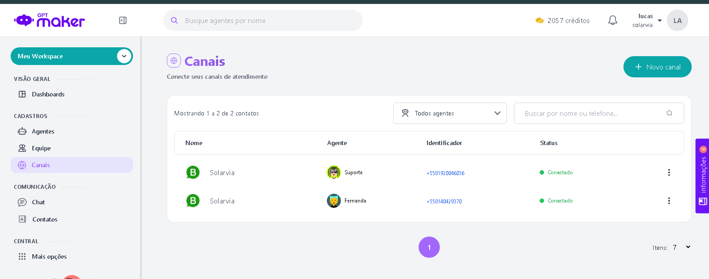

Projetos
Sistema de Atendimento com Agentes de IA

Plataforma de gestão de agentes inteligentes para atendimento automatizado, integração de canais e gerenciamento de contatos.
Plataforma Solarvia

Sistema web desenvolvido para gestão de processos e atendimento. Possui calculadora de economia de energia solar e sistema de captação de leads.
Ver ProjetoCRM e Captação de Leads

Sistema CRM completo com captação de leads, cadastro de clientes e painel administrativo para gerenciamento de oportunidades.
Ver ProjetoAuroraLucas
Backend responsável pela lógica de negócio de skins, partys,lobby de jogos, integração de APIs e processamento de dados.
Ver no GitHub